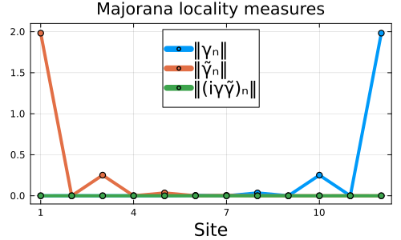

Interacting Kitaev chain
An interacting Kitaev chain has two nearly degenerate ground states of opposite parity, which define many-body Majorana operators. This tutorial builds the chain from a symbolic Hamiltonian, diagonalizes it per parity sector with ParityConservation, and uses partial_trace on low-rank operators to show that these Majoranas stay localized at the chain ends (see Ref. [1]).
Hamiltonian and parity sectors
@fermions f declares fermionic modes f[i], and hilbert_space(f, 1:N, ParityConservation()) builds the space of N modes split into sectors of even and odd total parity. The Hamiltonian is written symbolically, with hc adding the Hermitian conjugate of each term.
using FermionicHilbertSpacesusing Arpack, LinearAlgebra, LowRankMatrices, Plots@fermions fN = 12H = hilbert_space(f, 1:N, ParityConservation())kitaev_chain(f, N, μ, t, Δ, U) = sum(t * f[i]' * f[i+1] + hc for i in 1:(N-1)) + sum(Δ * f[i] * f[i+1] + hc for i in 1:(N-1)) + sum(U * f[i]' * f[i] * f[i+1]' * f[i+1] for i in 1:(N-1)) + sum(μ[i] * f[i]' * f[i] for i in 1:N)# Parameters close to the sweet spot with perfectly localized MajoranasU = 4.0t = 1.0δΔ = 0.4Δ = t + U / 2 - δΔ # detuned from the sweet spotμ = fill(-U, N)μ[[1, N]] .= -U / 2 # edge chemical potentialshsym = kitaev_chain(f, N, μ, t, Δ, U);Ground states
The Hamiltonian conserves parity, so we diagonalize each parity sector separately. representation turns the symbolic Hamiltonian into a sparse matrix on a sector, and embed maps its ground state back into the full space H. The two energies are nearly degenerate.
function ground_state(parity) Hsec = sector(parity, H) vals, vecs = eigs(representation(hsym, Hsec); nev = 1, which = :SR) return (; energy = first(vals), state = embed(vecs[:, 1], Hsec => H))end;(Eo, o), (Ee, e) = map(ground_state, (-1, 1)); # odd and even parityEo - Ee1.9647353841634185e-5Locality of the Majoranas
The ground-state pair defines two many-body Majorana operators, $\gamma = |o\rangle\langle e| + \mathrm{h.c.}$ and $\tilde\gamma = i|o\rangle\langle e| + \mathrm{h.c.}$, and the parity-difference operator $|o\rangle\langle o| - |e\rangle\langle e|$. The norm of the reduction of each to a single site, partial_trace(x, H => Hsite), shows where it is supported; the two Majoranas peak at opposite ends of the chain. LowRankMatrix lets partial_trace avoid forming full-space matrices.
γ = LowRankMatrix(o, conj(e)) + hcγ̃ = 1im * LowRankMatrix(o, conj(e)) + hcδρ = LowRankMatrix(o, conj(o)) - LowRankMatrix(e, conj(e))Hsites = [hilbert_space(f, i:i) for i in 1:N]locality(x) = [norm(svdvals(partial_trace(x, H => Hsite)), 1) for Hsite in Hsites]kwargs = (; lw=4, legendfontsize=15, marker=true, markerstrokewidth=2)plot(xlabel="Site", title="Majorana locality measures"; frame=:box, size=(500, 300), xticks = 1:3:N, ylims = (-0.1, 2.1), legendposition = :top, labelfontsize = 15)plot!(1:N, locality(γ); label = "‖γₙ‖", kwargs...)plot!(1:N, locality(γ̃); label = "‖γ̃ₙ‖", kwargs...)plot!(1:N, locality(δρ); label = "‖(iγγ̃)ₙ‖", kwargs...)
This page was generated using Literate.jl.
- 1W. Samuelson et al., PRX Quantum 7, 020341 (2026), arXiv:2510.20538.